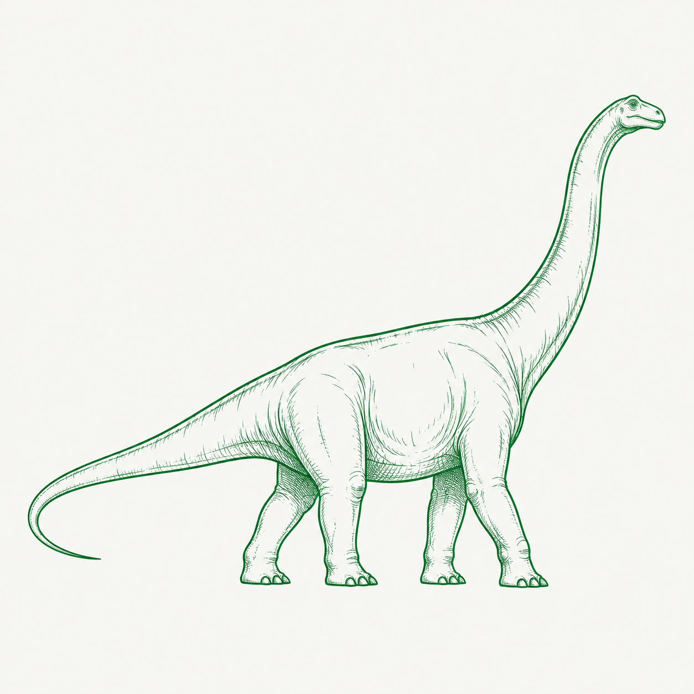
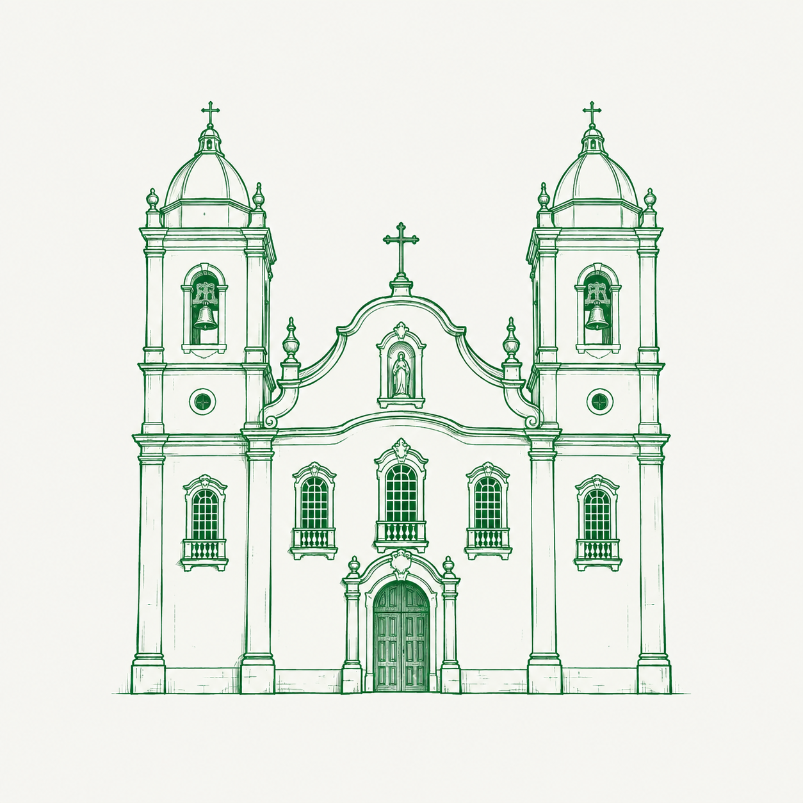
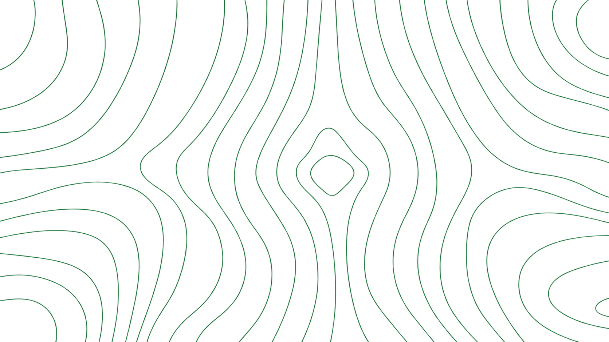
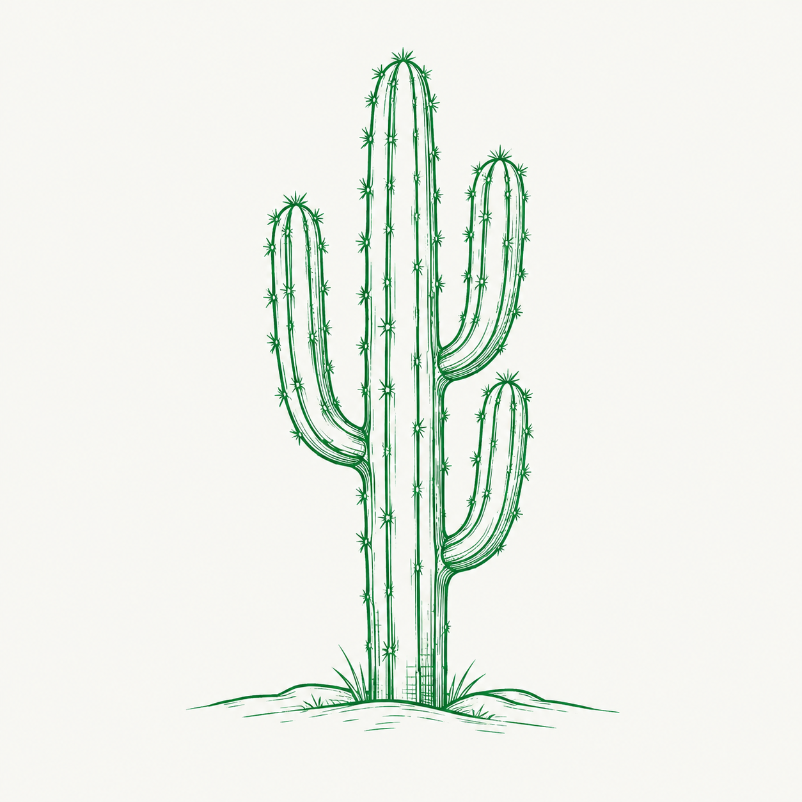
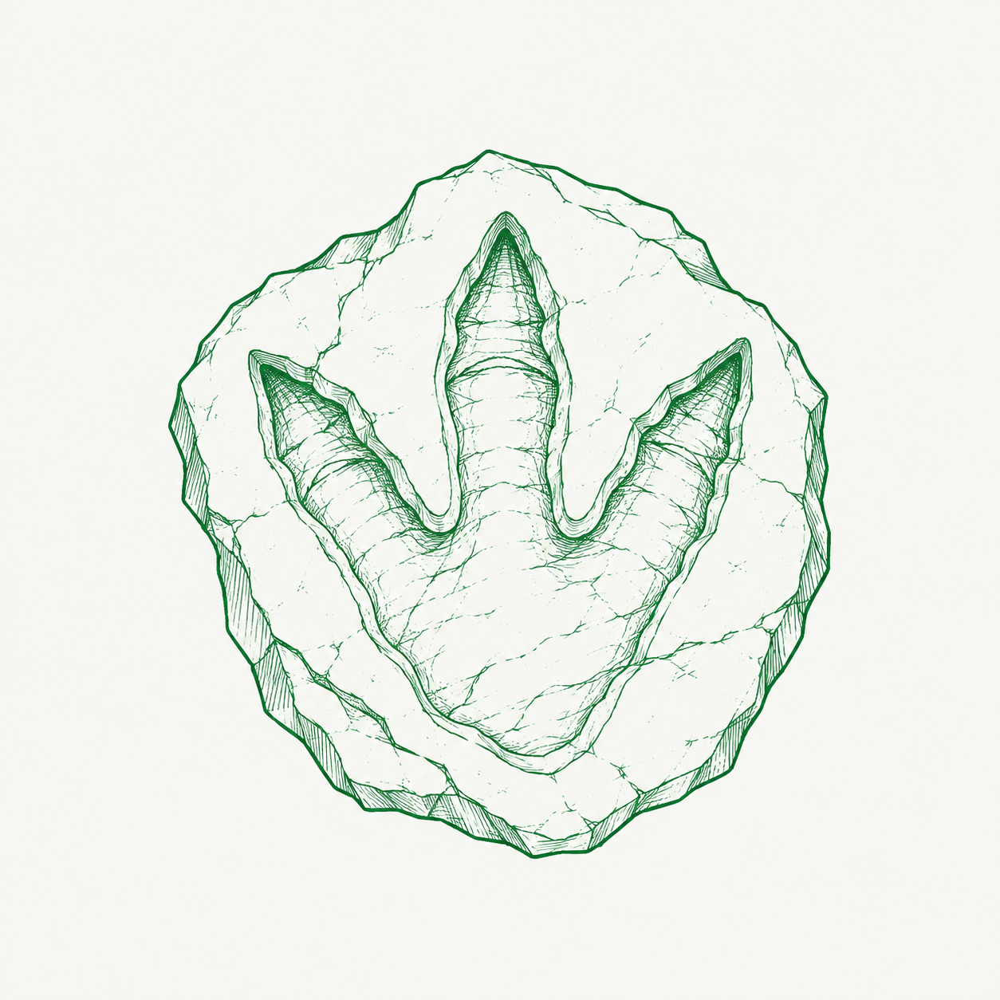

TRANSFORMA
PESSOAS
E CIDADES
PROGRAMA DE
GOVERNANÇA
EDUCACIONAL MUNICIPAL
Soluções estratégicas para uma educação pública organizada, inovadora e orientada por resultados.
ESTRATÉGICA
E EVIDÊNCIAS
DESENVOLVIMENTO
E RESULTADOS
QUE FAZ HISTÓRIA

Objetivo geral do programa
Implantar uma estrutura municipal de governança para adequar, implementar, monitorar e aprimorar as políticas educacionais, articulando currículo, formação continuada, gestão escolar, práticas pedagógicas, avaliação, dados e reconhecimento.


O que é o Programa de Governança Educacional Municipal?
É uma iniciativa estratégica que apoia o município na implementação, monitoramento e avaliação das principais políticas educacionais, integrando planejamento, formação, gestão e dados para transformar normas em práticas e gerar resultados reais nas escolas.
e colaborativa
e segurança
e aprendizagem

DIAGNÓSTICO
Compreendemos a realidade do município com dados, escuta e análise estratégica antes de definir prioridades.
melhores escolas amanhã.

DIAGNÓSTICO
Avance pelas etapas do diagnóstico com as setas.
DE EDUCAÇÃO
PLANEJAMENTO
Definimos prioridades, metas e caminhos alinhados às políticas e às necessidades locais.
mais educação amanhã.

PLANEJAMENTO
Fluxo estratégico para transformar evidências em política educacional. Avance com a seta direita.
mais educação amanhã.
Sobre demanda
ação
DE EDUCAÇÃO
FORMAÇÃO
Desenvolvemos profissionais da educação com trilhas alinhadas à prática e acompanhamento na rede.
aprendizagem que permanece.
FORMAÇÃO
Um percurso formativo híbrido, mediado por especialistas, ambiente virtual e aplicação prática na rede. Avance com a seta direita.
qualificados
ativa
digital
ESPECIALISTAS POR ÁREA
Profissionais qualificados que planejam, curam e constroem as formações da rede.
ENCONTROS PRESENCIAIS
Momentos de alinhamento, mobilização e conexão com a rede municipal.
AMBIENTE VIRTUAL COM TRILHAS
Uma experiência formativa dinâmica, gamificada e acompanhada no AVA.
OFICINAS NA ESCOLA
Da teoria à prática, com metodologias ativas, aplicação e acompanhamento.
CERTIFICAÇÃO E ACERVO DIGITAL
Reconhecimento ao profissional e legado permanente para a rede municipal.
DE EDUCAÇÃO
IMPLEMENTAÇÃO
Apoiamos a execução nas escolas com instrumentos, modelos e acompanhamento.
executar transforma.
ESTRUTURA DE IMPLEMENTAÇÃO
Papéis definidos, atuação integrada e foco em resultados.
DE EDUCAÇÃO
MONITORAMENTO
Acompanhamos indicadores, processos e evidências ao longo de todo o ciclo.
corrigir a tempo.
MONITORAMENTO ESTRATÉGICO
O que monitoramos para acompanhar a execução e orientar ajustes.
DE EDUCAÇÃO
AVALIAÇÃO E DECISÃO
Geramos evidências para decisões estratégicas e melhoria contínua.
por uma educação mais forte!
AVALIAÇÃO E DECISÃO
Principais entregas para a Secretaria ao final do ciclo.
Qual a importância para o município
O programa transforma política educacional em execução comprovável: prioridades claras, profissionais preparados, escolas acompanhadas e decisões sustentadas por evidências.
Benefícios para o município
O ganho não está em telas: está em capacidade institucional. A Secretaria passa a enxergar a rede, decidir com dados e comprovar o que executa.

MUNICIPAL
DE EDUCAÇÃO
UMA GESTÃO EDUCACIONAL MAIS ESTRATÉGICA E ORIENTADA POR EVIDÊNCIAS
O próximo passo é curto: um diagnóstico municipal define a prioridade de entrada, o escopo e o plano de trabalho das primeiras semanas.
NOSSA GENTE.
QUE FAZ HISTÓRIA